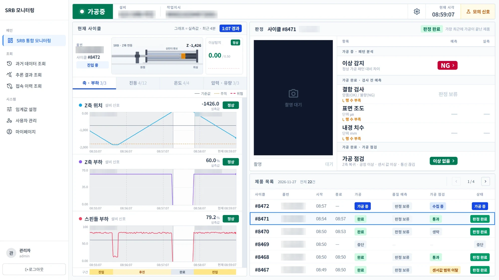
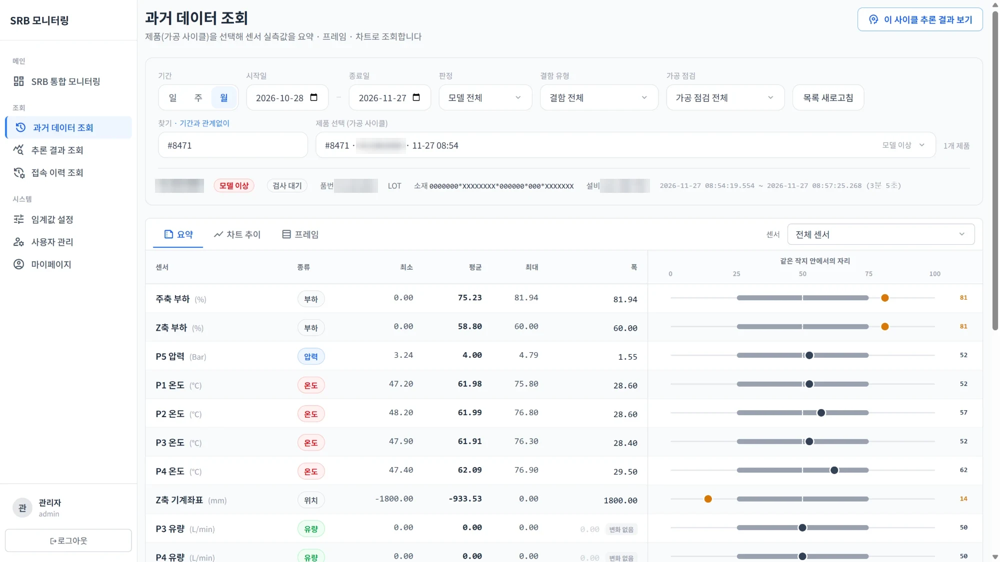
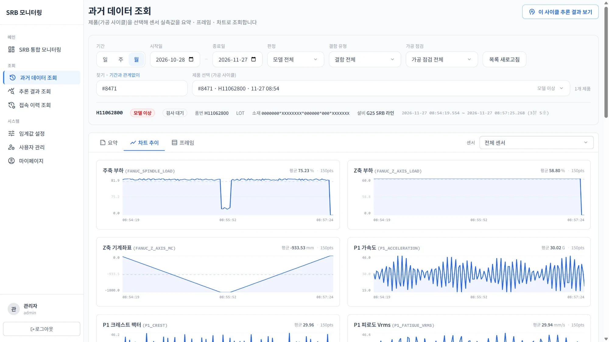
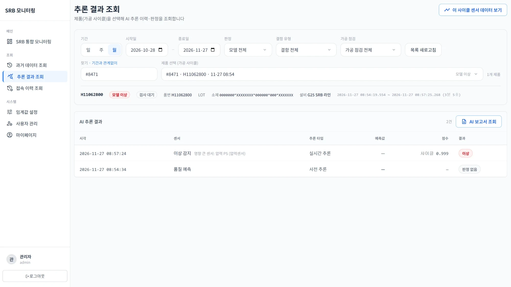
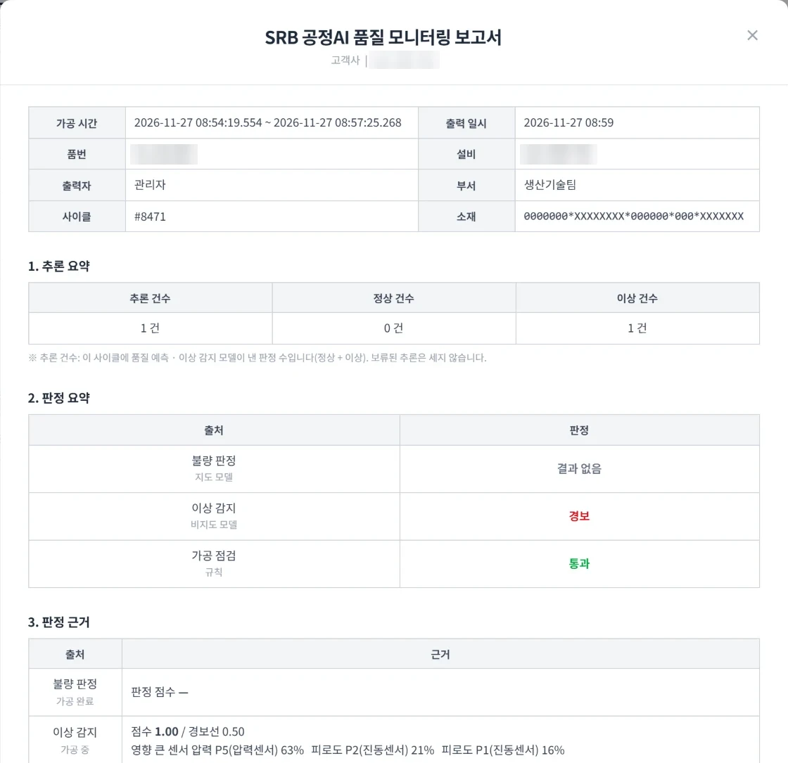
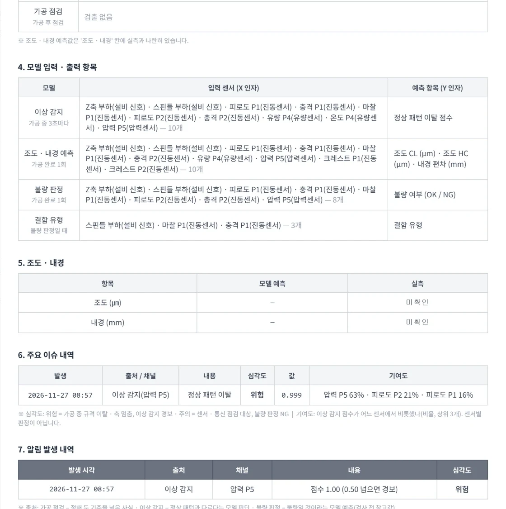

설비(PLC)의 센서 데이터를 엣지에서 0.3초 주기로 수집해 MQTT로 서버에 보내고, FastAPI 백엔드에서 실시간 스트리밍 · AI 추론 · 이력 조회 · 보고서까지 이어지는 파이프라인을 설계·구축해 현장에 납품하고 운영했습니다. 작업자가 설비 앞 화면으로 보는 시스템입니다.
기간
2026.01 – 진행 중
역할
파이프라인 개발 · 과제 PM
기여
비머지 커밋 210건 중 148건
형태
현장 납품 · 온프레미스
문제
서버가 PLC를 직접 읽는 구조가 현장에서 불안정했고, 0.3초 수집 중 DB·추론·화면 전송이 서로를 막았습니다.
내가 한 일
Async 수집 + 스레드 분리, 엣지 MQTT 전환과 고장별 대응, 제품 단위 DB 구조, 모델 연동, 테스트·CI/CD를 만들었습니다.
결과
현장 납품 · 운영. 재생 검증에서 사이클 26/26 일치, 테스트 0 → 297개, 머지하면 가공을 피해 자동 배포·실패 시 롤백.
01구성과 역할
팀원 두 명이 초기 세팅, 로그인·JWT, 사용자 관리, 초기 대시보드를 맡았고, 저는 그 위에서 데이터가 들어오고 판정되어 화면에 나가는 경로 전체를 맡았습니다.

통합 모니터링 화면 — 가공 상태 · 실시간 센서 그래프(사이클 구간 표시) · 최근 사이클 판정 · 제품 목록. 작업자가 설비 앞에서 보는 화면입니다.
설비 PLC센서 22채널 · 레지스터 85개
Modbus
엣지 PC기존 CSV 수집기 + MQTT 발신기
MQTT
추론 서버mosquitto · FastAPI · nginx · MariaDB
파싱 · 단위 환산
AI 모델 3종 추론
제품(사이클) 단위 저장
SSE → 작업자 화면
본인 담당: 수집 · 스트리밍 · 추론 파이프라인, DB 구조, 모델 연동, 엣지 MQTT, 테스트 · CI, 배포 자동화, 운영 화면 대부분
02수집 루프를 막지 않는 파이프라인
수집 → 추론 → 화면 전 구간을 만들면서 가장 먼저 지킨 원칙은 "0.3초 수집 주기는 무엇에도 막히지 않는다"였습니다.
PLC 레지스터 85개를 1회 요청으로 읽습니다.
블로킹 Modbus 클라이언트를 Async 클라이언트로 교체했습니다. 0.3초마다 이벤트 루프가 멈춰 API 전체가 서던 문제 때문입니다.
DB 쓰기와 모델 추론은 asyncio.to_thread로 분리해 수집 루프가 기다리지 않게 했습니다.
수집 주기(0.3초)와 화면 전송 주기(0.5초)를 분리했습니다.
SSE 구독자마다 크기가 정해진 큐를 두고, 차면 가장 오래된 프레임을 버립니다. 느린 브라우저가 수집을 막지 못합니다.
PLC가 없는 개발 PC에서도 실제와 같은 레지스터 배열로 같은 파싱 경로를 타는 모의 모드를 만들었습니다.
용량 판단 — 22태그를 3.3Hz로 그대로 적재하면 하루 600만 행입니다. 원본은 엣지 CSV가 주인이고, 서버 DB에는 추론 · 검사 결과(가공된 데이터)만 남겼습니다.
03수집 경로 전환: 서버 직접 Modbus → 엣지 MQTT
서버가 PLC를 직접 읽는 구성은 현장에서 안정적으로 붙지 않았고, 한 PLC에 마스터가 둘이 되는 문제도 있었습니다. 엣지가 이미 읽고 있는 프레임을 MQTT로 넘겨받도록 바꿨습니다.
수집 루프는 두 군데(연결 확인 · 프레임 읽기)만 갈아 끼우고, 아래의 파싱 · 모델 · DB · SSE는 그대로 뒀습니다.
설정 한 줄(MQTT_ENABLED=false)로 예전 경로로 되돌릴 수 있습니다.
단위 환산(배율)은 서버 한 곳에서만 합니다. 양쪽이 배율을 따로 들면 한쪽만 고쳤을 때 값이 소리 없이 10배 어긋납니다.
새로 생기는 고장마다 대응을 넣었습니다
고장
대응
QoS 1 재전송(중복)
순번(seq)으로 버림
엣지 재기동
seq가 크게 뒤로 뛰면 기준선을 다시 잡음
끊겼다 다시 붙음
지난 프레임을 몰아 받지 않음 (clean session, retain 미사용)
큐가 참
오래된 것부터 버림
엣지가 조용함
5초면 화면에 경고 배지
채널 누락
세어서 로그 · 상태 API · 화면에 표시
엣지 발신기
기존 수집기가 쓰는 CSV를 따라가며 발신합니다. 기존 수집기는 건드리지 않습니다.
날짜가 바뀌면 다음 파일로 옮겨 타고, 덜 쓰인 줄은 보내지 않습니다.
같은 설비 발신기의 중복 기동을 막는 잠금을 넣었습니다. 두 개가 뜨면 같은 client id로 브로커가 서로를 끊어 내는 일이 실제로 있었습니다.
04제품 단위 데이터 · AI 모델 연동
제품(가공 사이클) 단위 데이터 구조
products 테이블을 만들고 센서 · 추론 결과를 FK로 묶었습니다.
제품 목록 · 상세 · 센서 시계열 · 추론 결과 · 보고서 API를 만들었습니다.

과거 데이터 조회 · 요약 — 사이클을 고르면 센서별 최소 · 평균 · 최대와 같은 작업지시 안에서의 위치를 보여 줍니다.

과거 데이터 조회 · 차트 — 같은 사이클의 센서별 시계열. 버튼 하나로 이 사이클의 추론 결과로 넘어갑니다.
사이클 경계 재설계
PLC 56번지를 사이클 경계로 쓰고 있었는데, 실제로는 투입자재 라벨이었습니다. 실측 로그와 대조해 보니 가공 26회에 라벨 변경은 15회였습니다. Z축 가공 상태로 경계를 바꾸고 가공이 끝나는 즉시 판정하게 했습니다.
26 / 26재생 검증: 가공 횟수와 열린 사이클 수 일치
15기존 기준(라벨 변경)으로 잡히던 사이클 수
즉시26건 모두 가공 종료 즉시 판정
외부(대학) AI 모델 연동과 평가
이상탐지 · 회귀 · 불량 판정 모델 3종을 어댑터 계층으로 붙였습니다. 원본 코드는 고치지 않고 차이는 어댑터에서 맞춥니다.
"모델이 없음"과 "이 사이클은 판정 보류"를 구분해 화면에 보여 줍니다.
사이클 477건을 모델에 태워 성적서 실측과 대조하는 평가 스크립트를 만들었고, 조도 예측 일부 구간에서 학습 데이터 누수 흔적(예측의 42%가 실측을 소수 셋째 자리까지 재현)을 찾았습니다. 누수가 없는 구간에서는 평균값만 답하는 것보다 나쁘다는 것을 수치로 보였습니다.
생산성 검증 제출용으로 흩어진 테이블을 조인해 기간별 추론 로그 CSV와 일별 요약을 한 번에 냅니다(시연용 모의 사이클은 기본 제외).
불량 예측 알림이 화면 폴링에 의존해 다른 화면에 있으면 누락되던 것을, 판정 직후 서버가 SSE 이벤트로 밀어 보내게 바꿨습니다.

추론 결과 조회 — 사이클별 AI 추론 이력. 이상 감지는 영향이 큰 센서를, 판정이 없을 때는 '판정 없음'을 그대로 보여 줍니다.

AI 보고서 (1) — 추론 요약 · 모델별 판정 · 판정 근거(점수와 센서별 기여도)

AI 보고서 (2) — 모델별 입력 센서 · 예측 항목, 조도 · 내경 예측과 실측, 주요 이슈 · 알림 내역
05테스트 · CI/CD
0 → 297백엔드 테스트 함수 (2026.11 기준)
141 + 10CI 최초 구축 시 백엔드 · 프론트 테스트
자동 롤백배포 실패 시 직전 커밋으로
통합 테스트는 실제 MySQL에 시험용 스키마를 만들어 돌립니다. 목 DB로는 FK · 마이그레이션이 검증되지 않기 때문입니다.
설비 쓰기 호출이 코드에 없는지 CI가 확인합니다(단방향 운영 안전 요건).
머지하면 자체 호스팅 러너가 배포합니다. 인바운드 방화벽을 열지 않고, 가공 중이면 끝날 때까지 기다리며, 실패하면 직전 커밋으로 되돌립니다.
06문제 해결 사례
CASE 1배포가 가공 도중 재시작해 제품 하나가 두 사이클로 갈림
원인
배포 스크립트가 가공 대기를 맨 앞에서 한 번만 확인했고, 빌드하는 1분 사이에 가공이 시작됐습니다.
해결
재기동 직전에 한 번 더 확인합니다. 끊긴 사이클은 종료 시각을 지어 넣지 않고 '중단'으로 남깁니다.
CASE 2'배포 완료'인데 수집이 죽어 있을 수 있었음
원인
기동 확인이 MQTT가 붙기 전에 찍혀 늘 False였고, 진짜 실패와 구분되지 않았습니다.
해결
연결 여부에 더해 프레임 수가 늘고 있는지까지 봅니다. 같은 작업에서 모델 의존성이 배포에서 빠지던 것(배포는 성공하고 추론만 깨지는 고장)도 찾았습니다.
CASE 3사이클 경계 오판
원인
PLC 56번지를 사이클 경계로 알고 있었지만 실제로는 투입자재 라벨이었습니다.
해결
실측 로그로 번지 의미를 검증하고 Z축 가공 상태로 경계를 바꿨습니다.
CASE 4좋아 보이던 모델 지표
원인
일부 구간 예측이 학습 데이터를 그대로 재현하고 있었습니다.
결과
477건 실측 대조로 누수를 밝히고, 누수 없는 구간의 실제 성능을 수치로 보고했습니다.
CASE 5알림 누락 · 반쪽 사이클 판정
해결
폴링 기반 알림을 서버 푸시(SSE)로 바꿨고, 가공 도중 기동하면 첫 사이클을 반쪽 데이터로 판정하던 문제를 고쳤습니다.
07현장 네트워크 구성 · 진단
사내망 · 설비망 · 폐쇄망으로 나뉜 공장에서 엣지 서버가 설비 데이터를 받고, 본사에서 원격으로 관리할 수 있도록 망 구성과 보안 협의를 맡았습니다(2026.06 –).
엣지 서버에 NIC 2개(사내망 · 설비망)를 두고, 기본 게이트웨이는 사내망 NIC에만 설정해 라우팅 충돌을 막았습니다.